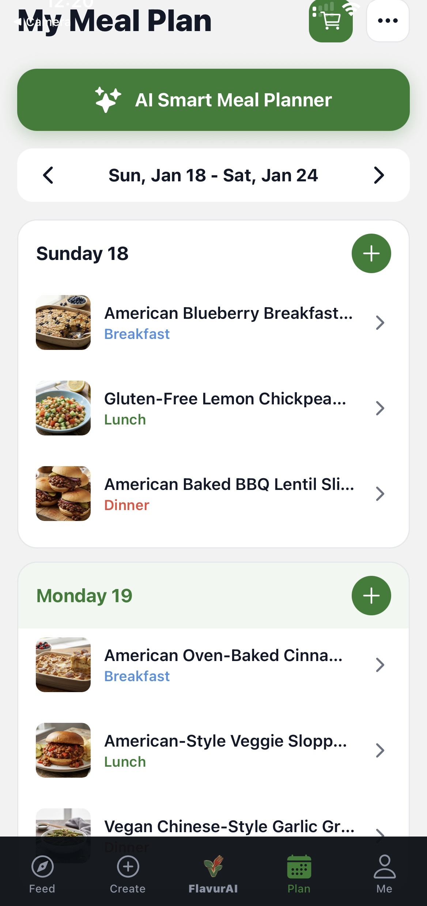
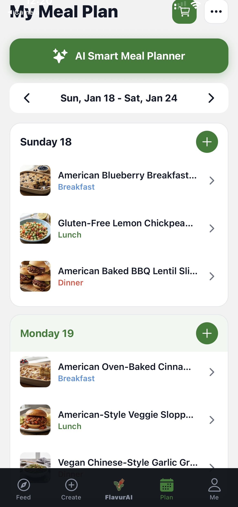

Flavur
The Future of Food.
An AI-native platform redefining how people discover, plan, and experience plant-based food.
Problem
Food decisions are made every day, yet the tools people use are static, manual, and outdated. Meal planning is time-consuming, fragmented, and mentally exhausting.
Solution
Flavur introduces intelligence into food. Personalized planning, adaptive recommendations, and creator-driven discovery — all powered by AI.
Product
 


Positioning
Flavur is not just a recipe app. It is an intelligent food platform designed for scale, creators, and long-term personalization.
Status
Live product. Active development. Private infrastructure.